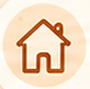

Experiencias para compartir
Convierte los momentos de cada día en oportunidades para comunicarse, jugar y crecer juntos.
- Personalizadas para tu familia
- Cortas y prácticas de 3, 5 o 10
minutos

Con lo que tienes en casa- Desde la fonoaudiología y con mucho
cariño
El lenguaje sucede
en las pequeñas acciones que vivimos cada día.